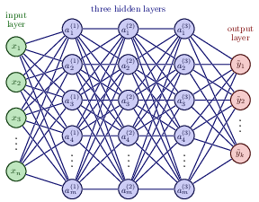

All three books have GitHub addresses from where one can download all codes. We will borrow most of the material from these three texts as well as from Goodfellow, Bengio and Courville's text Deep Learning
Neural networks, in its so-called feed-forward form, where each iterations contains a feed-forward stage and a back-propgagation stage, consist of series of affine matrix-matrix and matrix-vector multiplications. The unknown parameters (the so-called biases and weights which deternine the architecture of a neural network), are uptaded iteratively using the so-called back-propagation algorithm. This algorithm corresponds to the so-called reverse mode of automatic differentation.
A neural network consists of a series of hidden layers, in addition to the input and output layers. Each layer \( l \) has a set of parameters \( \boldsymbol{\Theta}^{(l)}=(\boldsymbol{W}^{(l)},\boldsymbol{b}^{(l)}) \) which are related to the parameters in other layers through a series of affine transformations, for a standard NN these are matrix-matrix and matrix-vector multiplications. For all layers we will simply use a collective variable \( \boldsymbol{\Theta} \).
It consist of two basic steps:
These two steps make up one iteration. This iterative process is continued till we reach an eventual stopping criterion.
The architecture of a neural network defines our model. This model aims at describing some function \( f(\boldsymbol{x} \) that is meant to describe some final result (outputs or target values \( bm{y} \)) given a specific input \( \boldsymbol{x} \). Note that here \( \boldsymbol{y} \) and \( \boldsymbol{x} \) are not limited to be vectors.
The architecture consists of
The cost function is a function of the unknown parameters \( \boldsymbol{\Theta} \) where the latter is a container for all possible parameters needed to define a neural network
If we are dealing with a regression task a typical cost/loss function is the mean squared error
$$ C(\boldsymbol{\Theta})=\frac{1}{n}\left\{\left(\boldsymbol{y}-\boldsymbol{X}\boldsymbol{\theta}\right)^T\left(\boldsymbol{y}-\boldsymbol{X}\boldsymbol{\theta}\right)\right\}. $$This function represents one of many possible ways to define the so-called cost function. Note that here we have assumed a linear dependence in terms of the paramters \( \boldsymbol{\Theta} \). This is in general not the case.
For neural networks the parameters \( \boldsymbol{\Theta} \) are given by the so-called weights and biases (to be defined below).
The weights are given by matrix elements \( w_{ij}^{(l)} \) where the superscript indicates the layer number. The biases are typically given by vector elements representing each single node of a given layer, that is \( b_j^{(l)} \).
Having defined the architecture of a neural network, the optimization of the cost function with respect to the parameters \( \boldsymbol{\Theta} \), involves the calculations of gradients and their optimization. The gradients represent the derivatives of a multidimensional object and are often approximated by various gradient methods, including
In addition to the above, there are often additional hyperparamaters which are included in the setup of a neural network. These will be discussed below.
The universal approximation theorem plays a central role in deep learning. Cybenko (1989) showed the following:
Let \( \sigma \) be any continuous sigmoidal function such that
$$ \sigma(z) = \left\{\begin{array}{cc} 1 & z\rightarrow \infty\\ 0 & z \rightarrow -\infty \end{array}\right. $$Given a continuous and deterministic function \( F(\boldsymbol{x}) \) on the unit cube in \( d \)-dimensions \( F\in [0,1]^d \), \( x\in [0,1]^d \) and a parameter \( \epsilon >0 \), there is a one-layer (hidden) neural network \( f(\boldsymbol{x};\boldsymbol{\Theta}) \) with \( \boldsymbol{\Theta}=(\boldsymbol{W},\boldsymbol{b}) \) and \( \boldsymbol{W}\in \mathbb{R}^{m\times n} \) and \( \boldsymbol{b}\in \mathbb{R}^{n} \), for which
$$ \vert F(\boldsymbol{x})-f(\boldsymbol{x};\boldsymbol{\Theta})\vert < \epsilon \hspace{0.1cm} \forall \boldsymbol{x}\in[0,1]^d. $$For those of you familiar with for example the Stone-Weierstrass theorem for polynomial approximations or the convergence criterion for Fourier series, there are similarities in the derivation of the proof for neural networks.
Any continuous function \( y=F(\boldsymbol{x}) \) supported on the unit cube in \( d \)-dimensions can be approximated by a one-layer sigmoidal network to arbitrary accuracy.
Hornik (1991) extended the theorem by letting any non-constant, bounded activation function to be included using that the expectation value
$$ \mathbb{E}[\vert F(\boldsymbol{x})\vert^2] =\int_{\boldsymbol{x}\in D} \vert F(\boldsymbol{x})\vert^2p(\boldsymbol{x})d\boldsymbol{x} < \infty. $$Then we have
$$ \mathbb{E}[\vert F(\boldsymbol{x})-f(\boldsymbol{x};\boldsymbol{\Theta})\vert^2] =\int_{\boldsymbol{x}\in D} \vert F(\boldsymbol{x})-f(\boldsymbol{x};\boldsymbol{\Theta})\vert^2p(\boldsymbol{x})d\boldsymbol{x} < \epsilon. $$None of the proofs give any insight into the relation between the number of of hidden layers and nodes and the approximation error \( \epsilon \), nor the magnitudes of \( \boldsymbol{W} \) and \( \boldsymbol{b} \).
Neural networks (NNs) have what we may call a kind of universality no matter what function we want to compute.
It does not mean that an NN can be used to exactly compute any function. Rather, we get an approximation that is as good as we want.
The class of functions that can be approximated are the continuous ones. If the function \( F(\boldsymbol{x}) \) is discontinuous, it won't in general be possible to approximate it. However, an NN may still give an approximation even if we fail in some points.
The questions we want to ask are how do changes in the biases and the weights in our network change the cost function and how can we use the final output to modify the weights and biases?
To derive these equations let us start with a plain regression problem and define our cost function as
$$ {\cal C}(\boldsymbol{\Theta}) = \frac{1}{2}\sum_{i=1}^n\left(y_i - \tilde{y}_i\right)^2, $$where the $y_i$s are our \( n \) targets (the values we want to reproduce), while the outputs of the network after having propagated all inputs \( \boldsymbol{x} \) are given by \( \boldsymbol{\tilde{y}}_i \).

With our definition of the targets \( \boldsymbol{y} \), the outputs of the network \( \boldsymbol{\tilde{y}} \) and the inputs \( \boldsymbol{x} \) we define now the activation \( z_j^l \) of node/neuron/unit \( j \) of the \( l \)-th layer as a function of the bias, the weights which add up from the previous layer \( l-1 \) and the forward passes/outputs \( \hat{a}^{l-1} \) from the previous layer as
$$ z_j^l = \sum_{i=1}^{M_{l-1}}w_{ij}^la_i^{l-1}+b_j^l, $$where \( b_k^l \) are the biases from layer \( l \). Here \( M_{l-1} \) represents the total number of nodes/neurons/units of layer \( l-1 \). The figure in the whiteboard notes illustrates this equation. We can rewrite this in a more compact form as the matrix-vector products we discussed earlier,
$$ \hat{z}^l = \left(\hat{W}^l\right)^T\hat{a}^{l-1}+\hat{b}^l. $$With the activation values \( \boldsymbol{z}^l \) we can in turn define the output of layer \( l \) as \( \boldsymbol{a}^l = f(\boldsymbol{z}^l) \) where \( f \) is our activation function. In the examples here we will use the sigmoid function discussed in our logistic regression lectures. We will also use the same activation function \( f \) for all layers and their nodes. It means we have
$$ a_j^l = f(z_j^l) = \frac{1}{1+\exp{-(z_j^l)}}. $$From the definition of the activation \( z_j^l \) we have
$$ \frac{\partial z_j^l}{\partial w_{ij}^l} = a_i^{l-1}, $$and
$$ \frac{\partial z_j^l}{\partial a_i^{l-1}} = w_{ji}^l. $$With our definition of the activation function we have that (note that this function depends only on \( z_j^l \))
$$ \frac{\partial a_j^l}{\partial z_j^{l}} = a_j^l(1-a_j^l)=f(z_j^l)(1-f(z_j^l)). $$With these definitions we can now compute the derivative of the cost function in terms of the weights.
Let us specialize to the output layer \( l=L \). Our cost function is
$$ {\cal C}(\boldsymbol{\Theta}^L) = \frac{1}{2}\sum_{i=1}^n\left(y_i - \tilde{y}_i\right)^2=\frac{1}{2}\sum_{i=1}^n\left(a_i^L - y_i\right)^2, $$The derivative of this function with respect to the weights is
$$ \frac{\partial{\cal C}(\boldsymbol{\Theta}^L)}{\partial w_{jk}^L} = \left(a_j^L - y_j\right)\frac{\partial a_j^L}{\partial w_{jk}^{L}}, $$The last partial derivative can easily be computed and reads (by applying the chain rule)
$$ \frac{\partial a_j^L}{\partial w_{jk}^{L}} = \frac{\partial a_j^L}{\partial z_{j}^{L}}\frac{\partial z_j^L}{\partial w_{jk}^{L}}=a_j^L(1-a_j^L)a_k^{L-1}. $$We have thus
$$ \frac{\partial{\cal C}((\boldsymbol{\Theta}^L)}{\partial w_{jk}^L} = \left(a_j^L - y_j\right)a_j^L(1-a_j^L)a_k^{L-1}, $$Defining
$$ \delta_j^L = a_j^L(1-a_j^L)\left(a_j^L - y_j\right) = f'(z_j^L)\frac{\partial {\cal C}}{\partial (a_j^L)}, $$and using the Hadamard product of two vectors we can write this as
$$ \boldsymbol{\delta}^L = f'(\hat{z}^L)\circ\frac{\partial {\cal C}}{\partial (\boldsymbol{a}^L)}. $$This is an important expression. The second term on the right handside measures how fast the cost function is changing as a function of the $j$th output activation. If, for example, the cost function doesn't depend much on a particular output node \( j \), then \( \delta_j^L \) will be small, which is what we would expect. The first term on the right, measures how fast the activation function \( f \) is changing at a given activation value \( z_j^L \).
Notice that everything in the above equations is easily computed. In particular, we compute \( z_j^L \) while computing the behaviour of the network, and it is only a small additional overhead to compute \( f'(z^L_j) \). The exact form of the derivative with respect to the output depends on the form of the cost function. However, provided the cost function is known there should be little trouble in calculating
$$ \frac{\partial {\cal C}}{\partial (a_j^L)} $$With the definition of \( \delta_j^L \) we have a more compact definition of the derivative of the cost function in terms of the weights, namely
$$ \frac{\partial{\cal C}}{\partial w_{jk}^L} = \delta_j^La_k^{L-1}. $$It is also easy to see that our previous equation can be written as
$$ \delta_j^L =\frac{\partial {\cal C}}{\partial z_j^L}= \frac{\partial {\cal C}}{\partial a_j^L}\frac{\partial a_j^L}{\partial z_j^L}, $$which can also be interpreted as the partial derivative of the cost function with respect to the biases \( b_j^L \), namely
$$ \delta_j^L = \frac{\partial {\cal C}}{\partial b_j^L}\frac{\partial b_j^L}{\partial z_j^L}=\frac{\partial {\cal C}}{\partial b_j^L}, $$That is, the error \( \delta_j^L \) is exactly equal to the rate of change of the cost function as a function of the bias.
We have now three equations that are essential for the computations of the derivatives of the cost function at the output layer. These equations are needed to start the algorithm and they are
$$ \begin{equation} \frac{\partial{\cal C}(\hat{W^L})}{\partial w_{jk}^L} = \delta_j^La_k^{L-1}, \label{_auto1} \end{equation} $$and
$$ \begin{equation} \delta_j^L = f'(z_j^L)\frac{\partial {\cal C}}{\partial (a_j^L)}, \label{_auto2} \end{equation} $$and
$$ \begin{equation} \delta_j^L = \frac{\partial {\cal C}}{\partial b_j^L}, \label{_auto3} \end{equation} $$We have that (replacing \( L \) with a general layer \( l \))
$$ \delta_j^l =\frac{\partial {\cal C}}{\partial z_j^l}. $$We want to express this in terms of the equations for layer \( l+1 \).
We obtain
$$ \delta_j^l =\sum_k \frac{\partial {\cal C}}{\partial z_k^{l+1}}\frac{\partial z_k^{l+1}}{\partial z_j^{l}}=\sum_k \delta_k^{l+1}\frac{\partial z_k^{l+1}}{\partial z_j^{l}}, $$and recalling that
$$ z_j^{l+1} = \sum_{i=1}^{M_{l}}w_{ij}^{l+1}a_i^{l}+b_j^{l+1}, $$with \( M_l \) being the number of nodes in layer \( l \), we obtain
$$ \delta_j^l =\sum_k \delta_k^{l+1}w_{kj}^{l+1}f'(z_j^l), $$This is our final equation.
We are now ready to set up the algorithm for back propagation and learning the weights and biases.
The four equations provide us with a way of computing the gradient of the cost function. Let us write this out in the form of an algorithm.
First, we set up the input data \( \hat{x} \) and the activations \( \hat{z}_1 \) of the input layer and compute the activation function and the pertinent outputs \( \hat{a}^1 \).
Secondly, we perform then the feed forward till we reach the output layer and compute all \( \hat{z}_l \) of the input layer and compute the activation function and the pertinent outputs \( \hat{a}^l \) for \( l=1,2,3,\dots,L \).
Notation: The first hidden layer has \( l=1 \) as label and the final output layer has \( l=L \).
Thereafter we compute the ouput error \( \hat{\delta}^L \) by computing all
$$ \delta_j^L = f'(z_j^L)\frac{\partial {\cal C}}{\partial (a_j^L)}. $$Then we compute the back propagate error for each \( l=L-1,L-2,\dots,1 \) as
$$ \delta_j^l = \sum_k \delta_k^{l+1}w_{kj}^{l+1}f'(z_j^l). $$Finally, we update the weights and the biases using gradient descent for each \( l=L-1,L-2,\dots,1 \) and update the weights and biases according to the rules
$$ w_{jk}^l\leftarrow = w_{jk}^l- \eta \delta_j^la_k^{l-1}, $$ $$ b_j^l \leftarrow b_j^l-\eta \frac{\partial {\cal C}}{\partial b_j^l}=b_j^l-\eta \delta_j^l, $$with \( \eta \) being the learning rate.
With the back propagate error for each \( l=L-1,L-2,\dots,1 \) as
$$ \delta_j^l = \sum_k \delta_k^{l+1}w_{kj}^{l+1}f'(z_j^l), $$we update the weights and the biases using gradient descent for each \( l=L-1,L-2,\dots,1 \) and update the weights and biases according to the rules
$$ w_{jk}^l\leftarrow = w_{jk}^l- \eta \delta_j^la_k^{l-1}, $$ $$ b_j^l \leftarrow b_j^l-\eta \frac{\partial {\cal C}}{\partial b_j^l}=b_j^l-\eta \delta_j^l, $$Consider a simple NN in which the inputs \( \boldsymbol{x} \), the weights \( \boldsymbol{W} \), the biases \( \boldsymbol{b} \) and the ouputs \( \boldsymbol{\tilde{y}}=f(\boldsymbol{x};\boldsymbol{\Theta}) \) are just scalars and that we have two layers only, that is the output layer is labeled with \( L=2 \).
Our output is then (no boldfaced symbols since all quantities are scalars)
$$ \tilde{y}=f(x;Theta))=\sigma_{L=2}(w_2\sigma_1(w_1x+b_1)+b_2). $$For the back-propagation algorithm we will need various partial derivatives. One of these is
$$ \frac{\partial f(x;\Theta)}{\partial w_1}= $$The flexibility of neural networks is also one of their main drawbacks: there are many hyperparameters to tweak. Not only can you use any imaginable network topology (how neurons/nodes are interconnected), but even in a simple FFNN you can change the number of layers, the number of neurons per layer, the type of activation function to use in each layer, the weight initialization logic, the stochastic gradient optmized and much more. How do you know what combination of hyperparameters is the best for your task?
However,since there are many hyperparameters to tune, and since training a neural network on a large dataset takes a lot of time, you will only be able to explore a tiny part of the hyperparameter space.
For many problems you can start with just one or two hidden layers and it will work just fine. For the MNIST data set you ca easily get a high accuracy using just one hidden layer with a few hundred neurons. You can reach for this data set above 98% accuracy using two hidden layers with the same total amount of neurons, in roughly the same amount of training time.
For more complex problems, you can gradually ramp up the number of hidden layers, until you start overfitting the training set. Very complex tasks, such as large image classification or speech recognition, typically require networks with dozens of layers and they need a huge amount of training data. However, you will rarely have to train such networks from scratch: it is much more common to reuse parts of a pretrained state-of-the-art network that performs a similar task.
The Back propagation algorithm we derived above works by going from the output layer to the input layer, propagating the error gradient on the way. Once the algorithm has computed the gradient of the cost function with regards to each parameter in the network, it uses these gradients to update each parameter with a Gradient Descent (GD) step.
Unfortunately for us, the gradients often get smaller and smaller as the algorithm progresses down to the first hidden layers. As a result, the GD update leaves the lower layer connection weights virtually unchanged, and training never converges to a good solution. This is known in the literature as the vanishing gradients problem.
In other cases, the opposite can happen, namely the the gradients can grow bigger and bigger. The result is that many of the layers get large updates of the weights the algorithm diverges. This is the exploding gradients problem, which is mostly encountered in recurrent neural networks. More generally, deep neural networks suffer from unstable gradients, different layers may learn at widely different speeds
Although this unfortunate behavior has been empirically observed for quite a while (it was one of the reasons why deep neural networks were mostly abandoned for a long time), it is only around 2010 that significant progress was made in understanding it.
A paper titled Understanding the Difficulty of Training Deep Feedforward Neural Networks by Xavier Glorot and Yoshua Bengio found that the problems with the popular logistic sigmoid activation function and the weight initialization technique that was most popular at the time, namely random initialization using a normal distribution with a mean of 0 and a standard deviation of 1.
They showed that with this activation function and this initialization scheme, the variance of the outputs of each layer is much greater than the variance of its inputs. Going forward in the network, the variance keeps increasing after each layer until the activation function saturates at the top layers. This is actually made worse by the fact that the logistic function has a mean of 0.5, not 0 (the hyperbolic tangent function has a mean of 0 and behaves slightly better than the logistic function in deep networks).
Looking at the logistic activation function, when inputs become large (negative or positive), the function saturates at 0 or 1, with a derivative extremely close to 0. Thus when backpropagation kicks in, it has virtually no gradient to propagate back through the network, and what little gradient exists keeps getting diluted as backpropagation progresses down through the top layers, so there is really nothing left for the lower layers.
In their paper, Glorot and Bengio propose a way to significantly alleviate this problem. We need the signal to flow properly in both directions: in the forward direction when making predictions, and in the reverse direction when backpropagating gradients. We don’t want the signal to die out, nor do we want it to explode and saturate. For the signal to flow properly, the authors argue that we need the variance of the outputs of each layer to be equal to the variance of its inputs, and we also need the gradients to have equal variance before and after flowing through a layer in the reverse direction.
One of the insights in the 2010 paper by Glorot and Bengio was that the vanishing/exploding gradients problems were in part due to a poor choice of activation function. Until then most people had assumed that if Nature had chosen to use roughly sigmoid activation functions in biological neurons, they must be an excellent choice. But it turns out that other activation functions behave much better in deep neural networks, in particular the ReLU activation function, mostly because it does not saturate for positive values (and also because it is quite fast to compute).
The ReLU activation function suffers from a problem known as the dying ReLUs: during training, some neurons effectively die, meaning they stop outputting anything other than 0.
In some cases, you may find that half of your network’s neurons are dead, especially if you used a large learning rate. During training, if a neuron’s weights get updated such that the weighted sum of the neuron’s inputs is negative, it will start outputting 0. When this happen, the neuron is unlikely to come back to life since the gradient of the ReLU function is 0 when its input is negative.
To solve this problem, nowadays practitioners use a variant of the ReLU function, such as the leaky ReLU discussed above or the so-called exponential linear unit (ELU) function
$$ ELU(z) = \left\{\begin{array}{cc} \alpha\left( \exp{(z)}-1\right) & z < 0,\\ z & z \ge 0.\end{array}\right. $$In general it seems that the ELU activation function is better than the leaky ReLU function (and its variants), which is better than ReLU. ReLU performs better than \( \tanh \) which in turn performs better than the logistic function.
If runtime performance is an issue, then you may opt for the leaky ReLU function over the ELU function If you don’t want to tweak yet another hyperparameter, you may just use the default \( \alpha \) of \( 0.01 \) for the leaky ReLU, and \( 1 \) for ELU. If you have spare time and computing power, you can use cross-validation or bootstrap to evaluate other activation functions.
In most cases you can use the ReLU activation function in the hidden layers (or one of its variants).
It is a bit faster to compute than other activation functions, and the gradient descent optimization does in general not get stuck.
For the output layer:Batch Normalization aims to address the vanishing/exploding gradients problems, and more generally the problem that the distribution of each layer’s inputs changes during training, as the parameters of the previous layers change.
The technique consists of adding an operation in the model just before the activation function of each layer, simply zero-centering and normalizing the inputs, then scaling and shifting the result using two new parameters per layer (one for scaling, the other for shifting). In other words, this operation lets the model learn the optimal scale and mean of the inputs for each layer. In order to zero-center and normalize the inputs, the algorithm needs to estimate the inputs’ mean and standard deviation. It does so by evaluating the mean and standard deviation of the inputs over the current mini-batch, from this the name batch normalization.
It is a fairly simple algorithm: at every training step, every neuron (including the input neurons but excluding the output neurons) has a probability \( p \) of being temporarily dropped out, meaning it will be entirely ignored during this training step, but it may be active during the next step.
The hyperparameter \( p \) is called the dropout rate, and it is typically set to 50%. After training, the neurons are not dropped anymore. It is viewed as one of the most popular regularization techniques.
A popular technique to lessen the exploding gradients problem is to simply clip the gradients during backpropagation so that they never exceed some threshold (this is mostly useful for recurrent neural networks).
This technique is called Gradient Clipping.
In general however, Batch Normalization is preferred.
You may find this website very useful.
The first thing we would like to do is divide the data into two or three parts. A training set, a validation or dev (development) set, and a test set. The test set is the data on which we want to make predictions. The dev set is a subset of the training data we use to check how well we are doing out-of-sample, after training the model on the training dataset. We use the validation error as a proxy for the test error in order to make tweaks to our model. It is crucial that we do not use any of the test data to train the algorithm. This is a cardinal sin in ML. Then:
If the validation and test sets are drawn from the same distributions, then a good performance on the validation set should lead to similarly good performance on the test set.
However, sometimes the training data and test data differ in subtle ways because, for example, they are collected using slightly different methods, or because it is cheaper to collect data in one way versus another. In this case, there can be a mismatch between the training and test data. This can lead to the neural network overfitting these small differences between the test and training sets, and a poor performance on the test set despite having a good performance on the validation set. To rectify this, Andrew Ng suggests making two validation or dev sets, one constructed from the training data and one constructed from the test data. The difference between the performance of the algorithm on these two validation sets quantifies the train-test mismatch. This can serve as another important diagnostic when using DNNs for supervised learning.
Like all statistical methods, supervised learning using neural networks has important limitations. This is especially important when one seeks to apply these methods, especially to physics problems. Like all tools, DNNs are not a universal solution. Often, the same or better performance on a task can be achieved by using a few hand-engineered features (or even a collection of random features).
Here we list some of the important limitations of supervised neural network based models.
Some of these remarks are particular to DNNs, others are shared by all supervised learning methods. This motivates the use of unsupervised methods which in part circumvent these problems.